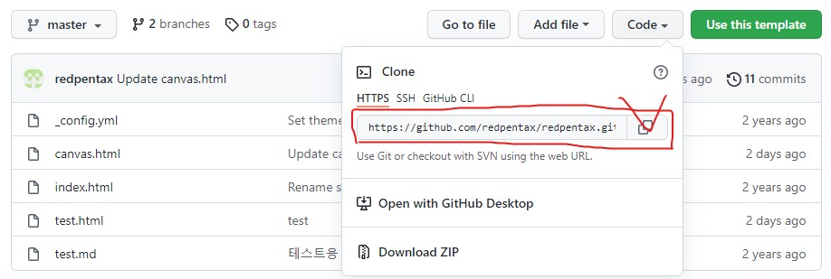

1. vscode 안의 git 프로그램 설치 https://git-scm.com
2. F1(Ctrl+Shift+p) 실행 후 본인의 github URL 주소를 복사해서 붙여 넣는다.

git config --global user.email "you@example.com" git config --global user.name "Your Name"
설정이 잘 되었는지 확인하기 위한 명령어
git config --list